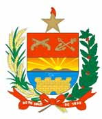

Também estão abertas as inscrições para o concurso público para Soldado da Polícia Militar de Santa Catarina. O candidato disputará uma das vagas para Soldado de 3ª Classe da corporação, e foram oferecidas 700 vagas, sendo 42 para o sexo feminino e 658 para masculino.
O período de inscrição começou no dia 04 de Fevereiro e vai se estender até o dia 04 de Março de 2008. Corram que ainda dá tempo!
As vagas serão distribuídas de forma regionalizada, e serão contempladas as regiões das seguintes unidades operacionais: 1º Batalhão de Polícia Militar (1º BPM), 2º BPM, 3º BPM, 5º BPM, 8º BPM, 9º BPM, 10º BPM, 11º BPM, 12º BPM, 13º BPM, 14º BPM, 15º BPM, 1ª Guarnição Especial, 2ª Guarnição Especial, 3ª Guarnição Especial, 4ª Guarnição Especial, 5ª Guarnição Especial, 8ª Guarnição Especial e 10ª Guarnição Especial. O número de vagas para cada unidade está previsto no Edital.O candidato deverá obrigatoriamente preencher todos os requisitos abaixo relacionados para inclusão na Polícia Militar de Santa Catarina:
- Ser brasileiro;
- Ter no mínimo 18 (dezoito) e máximo de 26 (vinte e seis) anos de idade;
- Ter no mínimo a altura de 1,65m, se do sexo masculino e 1,60m, se do sexo feminino;
- Possuir peso proporcional à altura;
- Estar em dia com as obrigações relativas ao Serviço Militar;
- Estar em dia com as obrigações eleitorais;
- Não ter sido condenado por crime doloso;
- Não ter exercido atividades prejudiciais ou perigosas à Segurança Nacional;
- Ter sido licenciado no mínimo no comportamento “Bom”, se Militar Estadual ou reservista das Forças Armadas;
- Estar classificado no mínimo com comportamento “Bom” se militar da ativa;
- Ter concluído o Ensino Médio ou equivalente;
- Estar habilitado para a condução de veículo automotor.
O Edital, link para inscrição, e a documentação pertinente ao certame podem ser encontrados neste link oficial.